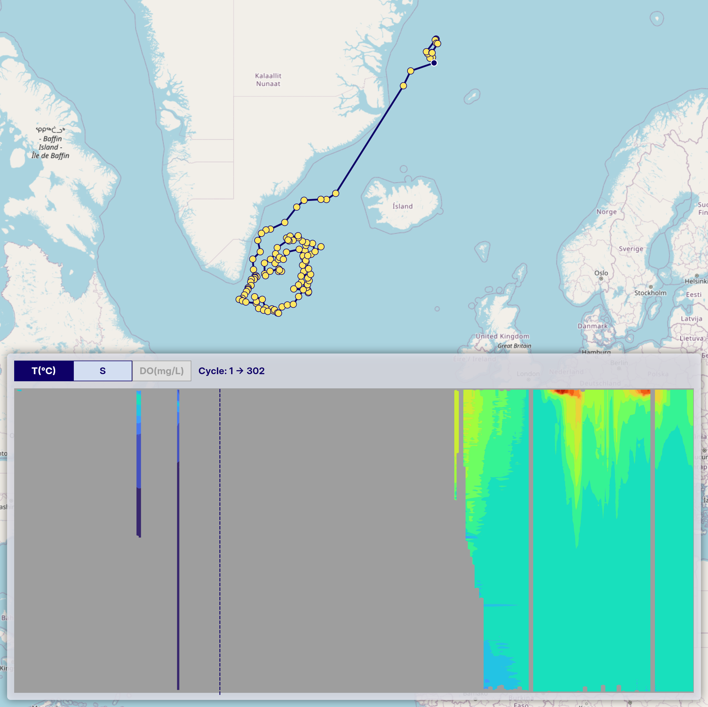

Data guide
Data source
These data were collected and made freely available by the International Argo Program and the national programs that contribute to it (http://www.argo.ucsd.edu, http://argo.jcommops.org). The Argo Program is part of the Global Ocean Observing System.
DOI: Argo (2000). Argo float data and metadata from Global Data Assembly Centre (Argo GDAC). SEANOE. http://doi.org/10.17882/42182
Data filtering policy
In OceanGraph, only carefully selected Argo float profiles are used according to the following conditions:
1. Selection of profiles
- Only real-time (
R,BR) and delayed-mode (D,BD) profiles are used. - If both real-time and delayed-mode profiles exist for the same cycle, the delayed-mode profile (D or BD) is preferred.
- Drift profiles (those with a
Dat the end ofCYCLE_NUMBER) are excluded.
2. Required variables
Only profiles that include all of the following variables are used:
PLATFORM_NUMBERCYCLE_NUMBERJULDJULD_QCLATITUDELONGITUDEPRES_ADJUSTEDPRES_ADJUSTED_QCTEMP_ADJUSTEDTEMP_ADJUSTED_QCPSAL_ADJUSTEDPSAL_ADJUSTED_QC
3. Date and position quality control
-
Only profiles with
JULD_QCvalues of 1 or 2 are used. -
Only profiles with
POSITION_QCvalues of 1 or 2 are used. -
Even if a profile passes the
POSITION_QCcheck, some data may still be unreliable. For example, as shown in the red circle below, caution is advised when interpreting such data.
Note: In some NetCDF files, multiple profiles can be present in a single file. In such cases, only the first profile (i.e., index 0) is used for further analysis, as illustrated in the example below:
# NetCDF file:
D5906026_128.nc
# JULD_QC:
[b'1' b'1']
# POSITION_QC:
[b'1' b'1']
# TEMP_QC:
[[b'1' b'1' b'1' ... b'1' b'1' b'1']
[b'1' b'1' b'1' ... nan nan nan]]
# TEMP:
[[7.743 7.745 7.745 ... 2.0353 1.9964 1.9618]
[7.7466 7.7459 7.7462 ... nan nan nan]]
4. Depth range restriction
Only data from depths shallower than 2000 dbar are retained. Additionally, layers with negative pressure values are removed along with their corresponding data (temperature, salinity, dissolved oxygen, etc.).
5. Profile quality filtering
Only profiles where at least 80% of PRES_ADJUSTED_QC, TEMP_ADJUSTED_QC, and PSAL_ADJUSTED_QC flags are either 1 or 2 are kept.
6. Layer-by-Layer filtering
- Only layers where the QC flags for pressure, temperature, and salinity are all 1 or 2 are kept.
- For dissolved oxygen (
DOXY_ADJUSTED):- Data are kept if the corresponding pressure, temperature, and salinity flags are all 1 or 2.
- The QC flag of DOXY itself is not used for filtering. This is because oxygen sensor quality can vary significantly, and applying its QC flag strictly may severely limit the available data.
- Users should carefully interpret dissolved oxygen data due to potential sensor uncertainties.
| pres_qc | temp_qc | psal_qc | doxy_qc | Judgment |
|---|---|---|---|---|
| 1 or 2 | 1 or 2 | 1 or 2 | 1 or 2 | PASS |
| 0 | 1 or 2 | 1 or 2 | 1 or 2 | FAIL |
| 1 or 2 | 0 | 1 or 2 | 1 or 2 | FAIL |
| 1 or 2 | 1 or 2 | 0 | 1 or 2 | FAIL |
| 1 or 2 | 1 or 2 | 1 or 2 | 0 (*) | PASS |
(*) DOXY quality flag is not used in filtering.
7. NaN value detection
After the layer-by-layer filtering, the system checks for any remaining NaN (Not a Number) values in the core variables:
- Pressure (
PRES_ADJUSTED) - Temperature (
TEMP_ADJUSTED) - Salinity (
PSAL_ADJUSTED)
If any NaN values are detected in these critical variables, the entire profile is rejected and removed from the dataset. This ensures data integrity and prevents computational errors in downstream analysis.
8. Interpolation of missing values for dissolved oxygen
For dissolved oxygen concentrations, which often contain missing (NaN) values, the following interpolation procedure is applied:
- Linear interpolation is used for internal (non-endpoint) missing values.
- Remaining missing values at the beginning or end of the profile are filled using backward-fill and forward-fill, respectively.
9. Duplicate pressure value removal
To ensure data integrity and maintain strictly increasing pressure sequences, duplicate pressure values are removed using a deterministic sorting approach:
- Pressure grouping: Data points are grouped by rounded pressure values (to 0.01 dbar precision).
- Deterministic selection: When multiple data points exist at the same pressure level, they are sorted by:
- Original pressure value
- Temperature value
- Salinity value
- First entry retention: The first entry from the sorted group is kept, while duplicates are discarded.
This process ensures that each profile has a unique, monotonically increasing pressure sequence, which is essential for accurate oceanographic analysis and prevents computational issues in downstream processing.
10. Pressure gap filtering
Profiles with excessively large gaps in pressure measurements are rejected and removed from the dataset to ensure data continuity. The filtering uses depth-dependent gap thresholds that become more permissive with increasing depth:
- 0-100 dbar: Maximum gap of 33.33 dbar
- 100-200 dbar: Maximum gap of 66.67 dbar
- 200-300 dbar: Maximum gap of 100 dbar
- 300-1000 dbar: Maximum gap increases proportionally (depth/3)
- >1000 dbar: Maximum gap of 500 dbar
This ensures that profiles maintain adequate vertical resolution throughout the water column, with stricter requirements in shallower waters where oceanographic gradients are typically steeper.
11. Oceanographic parameter conversion
To ensure consistency with oceanographic standards, the following parameter conversions are applied:
- Temperature to potential temperature (θ): In-situ temperature is converted to potential temperature using the TEOS-10 Gibbs Seawater (GSW) oceanographic toolbox.
- Practical salinity to absolute salinity (SA): Practical salinity is converted to absolute salinity using the GSW toolbox, taking into account the geographic location (latitude/longitude) and pressure.
These conversions provide more accurate representations of water mass properties by removing the effects of pressure and enabling precise oceanographic calculations. Profiles that encounter computational errors during these conversions are rejected to maintain data quality.
12. Decimal precision
To reduce data size, the values are rounded to the nearest values shown below:
| Variable | Precision |
|---|---|
| Pressure | 0.01 |
| Temperature | 0.001 |
| Salinity | 0.001 |
| Dissolved oxygen concentration | 0.001 |
Limitations
Missing Values in Vertical Section Charts
-
Masked Areas Without Original Data
When generating time-series vertical section charts of Argo float data, interpolation (e.g., using scipy.interpolate.griddata) is used to transform irregularly spaced profile data into a regular grid. Some areas may remain unfilled where original profile data are missing. To address this, we apply a mask after gridding to exclude regions without valid observations, setting those values to NaN.
In the example image below, these masked areas appear as uncolored gaps in the vertical section.
-
Sparse Data Due to Quality Control
After applying quality control, some profiles may be excluded, resulting in a sparser time series. Even if valid profiles are present at certain time steps, the interpolation process may not be able to generate a continuous vertical section. This leads to sections where observation points exist (trajectory figure) but the interpolated chart shows gray or missing areas (vertical section figure), indicating insufficient data density for interpolation.
This can be seen in the same image where gray regions appear in the section chart, even though observation points are visible in the trajectory chart above.

Please keep this in mind when interpreting the charts.